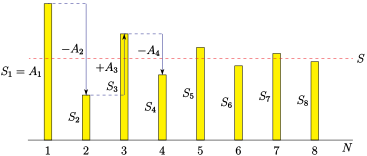

É muito comum encontrar séries para as quais é difícil, ou mesmo praticamente impossível, determinar soma de forma exata. Muitas vezes tenta-se avaliar a soma por aproximação truncando-a, ou seja, fazendo com que o índice seja executado apenas até algum valor finito \(N\text{,}\) ao invés de infinito. Entratanto, não faz sentido fazê-lo se a série for divergênte. Potanto, se torna interessante saber se a série converge ou não. Além disso, também é importantante saber qual é o erro quando aproximamos \(\sum^{\infty}_{n=1}a_n\) pela “série truncada” \(\sum^{N}_{n=1}a_n\text{.}\) Isso é chamado de erro de truncamento.
Subseção1.1Teste da Divergência
Nosso primeiro teste basea-se na constatação de que
por definição, uma série \(\sum_{n=1}^\infty a_n\) converge para \(S\) quando as somas parciais \(S_N=\sum_{n=1}^N a_n\) converge para \(S\text{.}\)
Então, como \(N\rightarrow\infty\text{,}\) temos \(S_N\rightarrow S\) e, pois \(N-1\rightarrow\infty\) temos também \(S_{N-1}\rightarrow S\text{.}\)
Logo \(a_N=S_N-S_{N-1}\rightarrow S-S=0\text{.}\)
Isso nos diz que, se já sabemos que uma dada série, \(\sum a_n\) é convergente, então \(n\)- ésimo termo da série, \(a_n\text{,}\) deve convergir para \(0\) quando \(n\) tende ao infinito. Nesta forma, o teste não é tão útil. No entanto, a contrapositiva é um teste útil para divergência.
Teorema1.1.Teste da Divergência.
Se a sequência \(\big\{a_n\big\}_{n=1}^\infty\) não converge para zero \(n\rightarrow\infty\text{,}\) tentão a série \(\sum_{n=1}^\infty a_n\) diverge.
Exemplo1.2.Uma série divergente.
A série \(\sum_{n=1}^\infty \frac{n}{n+1}\) é divergente.
Assim a série \(\sum_{n=1}^\infty \frac{n}{n+1}\) diverge.
Atenção1.3.
O teste de divergência é um “teste de sentido único”. Afirma que \(\lim_{n\rightarrow\infty}a_n\) não é zero, ou não existe, então a série \(\sum_{n=1}^\infty a_n\) diverge. Mas não diz absolutamente nada quando \(\lim_{n\rightarrow\infty}a_n=0\text{.}\) Em particular, é perfeitamente possível que uma série \(\sum_{n=1}^\infty a_n\)divergir embora \(\lim_{n\rightarrow\infty}a_n=0\text{.}\) A série \(\sum_{n=1}^\infty \frac{1}{n}\) é um exemplo disto. Mostraremos no Exemplo 1.9, que ela diverge.
Agora, enquanto a convergência ou divergência de séries como \(\sum_{n=1}^\infty \frac{1}{n}\) pode ser determinado usando alguns truques. Nas próximas subseções, discutiremos vários métodos para testar a convergência de séries.
Observe que, embora esses testes nos digam se uma série converge ou não, eles não (exceto em casos raros) determinam qual é a soma da série. Por exemplo, o teste que veremos na próxima subseção verifica que a série
No teste da integral, pensamos em uma série \(\sum_{n=1}^\infty a_n\text{,}\) que não podemos avaliar explicitamente, como a área de uma união de retângulos, com \(a_n\) representando a área de um retângulo de largura um e altura \(a_n\text{.}\) Então comparamos essa área com a área representada por uma integral, que podemos avaliar explicitamente. Começaremos com um exemplo simples, para ilustrar a ideia. Em seguida, passaremos a uma formulação do teste em geral.
Exemplo1.4.Convergência da série harmônica.
Visualize os termos da série harmônica \(\sum_{n=1}^\infty\frac{1}{n}\) como um gráfico de barras — cada termo é um retângulo de altura \(\frac{1}{n}\) e largura \(1\text{.}\) O limite da série é então a área limite desta união de retângulos.
Figura1.5.
Considere o esboço à esquerda daFigura 1.5. Isto mostra que a área das colunas sombreadas, \(\sum_{n=1}^4\frac{1}{n}\text{,}\) é maior que a área sob a curva \(y=\frac{1}{x}\) com \(1\le x\le 5\text{.}\) Ou seja
Seja \(I\) qualquer inteiro fixo com \(I \gt N_0\text{.}\) Então
\(\sum_{n=1}^\infty a_n\) converge se e somente se \(\sum_{n=I}^\infty a_n\) converge — remover um número finito fixo de termos de uma série não pode afetar se ela converge ou não.
Como \(a_n\ge 0\) para todo \(n\ge I \gt N_0\text{,}\) a sequência de somas parciais \(s_\ell=\sum_{n=I}^\ell a_n\) obedece \(s_{\ell+1} = s_\ell+a_{n+1} \ge s_\ell\text{.}\) Ou seja, \(s_\ell\) aumenta à medida que \(\ell\) aumenta.
Portanto, \(\big\{s_\ell\big\}\) deve convergir para algum número finito ou aumentar para infinito. Ou seja, \(\sum_{n=I}^\infty a_n\) converge para um número finito ou é \(+\infty\text{.}\)
Figura1.7.
A área sombreada na Figura 1.7 é \(\sum_{n=I}^\infty a_n\) pois
o primeiro retângulo sombreado tem altura \(a_I\) e largura \(1\) e, portanto, área \(a_I\) e
o segundo retângulo sombreado tem altura \(a_{I+1}\) e largura \(1\) e, portanto, área \(a_{I+1}\) e assim por diante
Essa área sombreada é menor que a área sob a curva \(y=f(x)\) para \(I-1\le x \lt \infty\text{.}\) Então
e, se a integral for finita, a soma \(\sum_{n=I}^\infty a_n\) também será finita. Além disso, o limite desejado no erro de truncamento é apenas o caso especial desta desigualdade com \(I=N+1\text{:}\)
Seja \(p \gt 0\text{.}\) Agora usaremos o teste da integral para determinar se a série \(\sum_{n=1}^\infty\frac{1}{n^p}\) (que às vezes é chamada de \(p\)-series) converge.
Para isso, precisamos de uma função \(f(x)\) que obedeça \(f(n)=a_n=\frac{1}{n^p}\) para todo \(n\) maior que algum \(N_0\text{.}\) Certamente \(f(x)=\frac{1}{x^p}\) obedece \(f(n)=\frac{1}{n^p}\) para todo \(n\ge 1\text{.}\) Então, vamos escolher este \(f\) e tentar \(N_0=1\text{.}\) (Podemos sempre aumentar \(N_0\text{,}\) se for necessário.)
Esta função também obedece às outras duas condições do Teorema 1.6 :
\(f(x) \gt 0\) para todo \(x\ge N_0=1\) e
\(f(x)\) descrece à medida que \(x\) cresce já que \(f'(x)=-p\frac{1}{x^{p+1}} \lt
0\) para todo \(x\ge N_0=1\text{.}\)
Portanto, o teste da integral nos diz que a série \(\sum_{n=1}^\infty\frac{1}{n^p}\) converge se e somente se a integral \(\int_1^\infty\frac{dx}{x^p}\) converge.
Sabemos que a integral \(\int_1^\infty\frac{dx}{x^p}\) converge se somente se \(p \gt 1\text{.}\)
Portanto, concluímos que \(\sum_{n=1}^\infty\frac{1}{n^p}\) converge se e somente se \(p \gt 1\text{.}\) Este às vezes é chamado de \(p\)-teste.
Em particular, a série \(\sum_{n=1}^\infty\frac{1}{n}\text{,}\) que é chamada de série harmônica, tem \(p=1\) e assim diverge. À medida que adicionamos mais e mais termos dessa série, os termos que adicionamos, a saber, \(\frac{1}{n}\text{,}\) ficam cada vez menores e tendem a zero, mas tendem a zero muito lentamente que a soma total ainda é infinita.
Por outro lado, a série \(\sum_{n=1}^\infty\frac{1}{n^{1.000001}}\) tem \(p = 1.000001
\gt 1\) e assim converge. Desta vez, à medida que adicionamos mais termos desta série, os termos que adicionamos, a saber, \(\frac{1}{n^{1.000001}}\text{,}\) tendem a zero (apenas) rápido o suficiente para que soma total seja finita. Lembre-se, para este exemplo, a convergência ocorre muito lentamente — é necessário pegar um grande número de termos para obter uma aproximação decente da soma total. Se aproximarmos \(\sum_{n=1}^\infty\frac{1}{n^{1.000001}}\) pela série truncada \(\sum_{n=1}^N\frac{1}{n^{1.000001}}\text{,}\) cometemos um erro de no máximo
Isso tende a zero quando \(N\rightarrow\infty\text{,}\) mas muito lentamente.
Agora sabemos que a linha divisória entre convergência e divergência de \(\sum_{n=1}^\infty\frac{1}{n^p}\) ocorre em \(p=1\text{.}\) Podemos ir um pouco mais a fundo e perguntar quanto mais rápido do que \(\frac{1}{n}\) o \(n\)-ésimo precisa diminuir para que a série convirja. Sabemos que para grandes valores para \(x\text{,}\) a função \(\log x\) é menor que \(x^a\) para qualquer \(a\) — para se convencer disso basta aplicar da regra de L’Hôpital. Portanto, não é irracional perguntar se a série
converge. Observe que somamos de \(n=2\) porque quando \(n=1, n\log n=0\text{.}\) Podemos analisar a convergência dessa soma com qualquer potência de \(\log n\text{.}\)
Seja \(p \gt 0\text{.}\) Agora usaremos o teste integral para determinar se a série \(\sum\limits_{n=2}^\infty\frac{1}{n(\log n)^p}\) converge.
Como no último exemplo, começamos escolhendo uma função que obedece \(f(n)=a_n=\frac{1}{n(\log
n)^p}\) para todo \(n\) maior que algum \(N_0\text{.}\) Certamente \(f(x)=\frac{1}{x(\log x)^p}\) obedece \(f(n)=\frac{1}{n(\log n)^p}\) para todo \(n\ge 2\text{.}\) Então, vamos usar esse \(f\) e tentar \(N_0=2\text{.}\)
Agora vamos verificar as outras duas condições doTeorema 1.6:
Tanto \(x\) quanto \(\log x\) são positivos para todo \(x \gt 1\text{,}\) então \(f(x) \gt
0\) para todo \(x\ge N_0=2\text{.}\)
À medida que \(x\) aumenta, \(x\) e \(\log x\) aumentam e, portanto, \(x(\log
x)^p\) aumenta e \(f(x)\) diminui.
Assim, o teste integral nos diz que a série \(\sum\limits_{n=2}^\infty\frac{1}{n(\log
n)^p}\) converge se e somente se a integral \(\int_2^\infty\frac{dx}{x (\log x)^p}\) converge.
Para testar a convergência da integral, fazemos a substituição \(u=\log x\text{,}\)\(du=\frac{dx}{x}\text{.}\)
Já sabemos que a integral é a integral \(\int_1^\infty\frac{du}{u^p}\) e, portanto, a integral \(\int_2^R \frac{dx}{x (\log x)^p}\text{,}\) converge se e somente se \(p \gt 1\text{.}\)
Portanto, concluímos que \(\sum\limits_{n=2}^\infty\frac{1}{n(\log n)^p}\) converge se e somente se \(p
\gt 1\text{.}\)
Subseção1.3Teste da Comparação
Nosso próximo teste de convergência é o teste de comparação. É muito parecido com o teste de comparação para integrais impróprias e é válido pelas mesmas razões. A ideia aproximada é bastante simples. Uma soma de termos maiores deve ser maior que uma soma de termos menores. Então, se sabemos que a grande soma converge, a pequena soma também deve convergir. Por outro lado, se sabemos que a pequena soma diverge, a grande soma também deve divergir. A formalização dessa ideia fornece o seguinte teorema.
Teorema1.11.Teste da Comparação.
Seja \(N_0\) um número natural e seja \(K \gt 0\text{.}\)
Se \(|a_n|\le K c_n\) para todo \(n\ge N_0\) e \(\sum\limits_{n=0}^\infty c_n\) converge, então \(\sum\limits_{n=0}^\infty a_n\) converge.
Se \(a_n\ge K d_n\ge0\) para todo \(n\ge N_0\) e \(\sum\limits_{n=0}^\infty d_n\) diverge, então \(\sum\limits_{n=0}^\infty a_n\) diverge.
“Demonstração”.
Não Demonstraremos este teorema aqui. Vamos apenas fazer algumas observações. É por isso que existem aspas em “Demonstração”. Para uma prova real veja a seção opcional [cross-reference to target(s) "sec_CompProof" missing or not unique].
Se \(\sum\limits_{n=0}^\infty c_n\) converge para um número finito e se os termos em \(\sum\limits_{n=0}^\infty a_n\) são menores que os termos em \(\sum\limits_{n=0}^\infty c_n\text{,}\) então não é surpresa que \(\sum\limits_{n=0}^\infty a_n\) também converge.
Se \(\sum\limits_{n=0}^\infty d_n\) diverge (ou seja, tende ao \(\infty\)) e se os termos em \(\sum\limits_{n=0}^\infty a_n\) são maiores que os termos em \(\sum\limits_{n=0}^\infty
d_n\text{,}\) então obviamente \(\sum\limits_{n=0}^\infty a_n\) tende ao \(\infty\text{,}\) e assim também diverge.
O teste de comparação para séries também é usado da mesma maneira que o teste de comparação para integrais impróprias. Claro, é preciso uma boa série para comparar, e muitas vezes a série \(\sum n^{-p}\) (do Exemplo 1.9), para algum \(p \gt 0\text{,}\) é a escolhida.
Poderíamos determinar se a série \(\sum_{n=1}^\infty\frac{1}{n^2+2n+3}\) converge aplicando o teste da integral. Mas não vale o esforço. A convergência ou não de qualquer série é determinada pelo comportamento da soma para \(n\) muito grande. Portanto, o primeiro passo para lidar com esse problema é desenvolver alguma intuição sobre o comportamento de \(a_n\) quando \(n\) for muito grande.
Passo 1: Neste caso, quando \(n\) for muito grande 1 \(n^2\gg 2n \gg 3\) para que \(\frac{1}{n^2+2n+3}\approx\frac{1}{n^2}\text{.}\) Já sabemos, doExemplo 1.9, que \(\sum_{n=1}^\infty\frac{1}{n^p}\) converge se e somente se \(p \gt 1\text{.}\) Portanto, \(\sum_{n=1}^\infty\frac{1}{n^2}\text{,}\) que tem \(p=2\text{,}\) converge, e esperamos que \(\sum_{n=1}^\infty\frac{1}{n^2+2n+3}\) convirja também.
Passo 2: Podemos usar o teste de comparação para confirmar que esse é realmente o caso. Para qualquer \(n\ge
1\text{,}\)\(n^2+2n+3 \gt n^2\text{,}\) de modo que \(\frac{1}{n^2+2n+3}\le\frac{ 1}{n^2}\text{.}\) Então o teste de comparação,Teorema 1.11, com \(a_n=\frac{1}{n^2+2n+3}\) e \(c_n=\frac{1}{n^2}\text{,}\) nos diz que \(\sum_{n=1}^\infty\frac{1}{n^2+2n+3}\) converge.
O exemplo anterior foi “manipulado” para facilitar a aplicação do teste de comparação. Geralmente é relativamente fácil, usando argumentos como aqueles noExemplo 1.12, encontrar uma série “simples” \(\sum_{n=1}^\infty b_n\) com \(b_n\) quase igual a \(a_n\) quando \(n\) é grande. No entanto, é muito raro que \(a_n\le b_n\) para todo \(n\text{.}\) É muito mais comum que \(a_n\le K
b_n\) para alguma constante \(K\text{.}\) Isso é suficiente para permitir a aplicação do teste da comparação. A seguir um exemplo.
Já sabemos doExemplo 1.9, com \(p=2\text{,}\) que \(\sum_{n=1}^\infty\frac{1}{n^2}\) converge, então esperamos que \(\sum_{n=1}^\infty\frac{n+\cos n}{n^3-\frac{1}{3}}\) convirja também
Passo 2: Podemos usar o teste de comparação para confirmar que esse é realmente o caso. Para fazer isso, precisamos encontrar uma constante \(K\) tal que \(|a_n|= \frac{|n+\cos
n|}{n^3-1/3}=\frac{n+ \cos
n}{n^3-1/3}\) é menor que \(\frac{K}{n^2}\) para todo \(n\text{.}\) Uma boa maneira 2 para fazer isso é fatorar o termo dominante (neste caso \(n\)) do numerador e também fatorar o termo dominante (neste caso \(n^3\)) do denominador.
Então agora precisamos encontrar uma constante \(K\) de tal forma que \(\frac{1+\frac{(\cos
n)}{n}}{1-\frac{1}{3n^3}}\) seja menor que \(K\) para todo \(n\ge 1\text{.}\)
Primeiro considere o numerador \(1+(\cos n)\frac{1}{n}\text{.}\) Para todo \(n\ge 1\)
\(\frac{1}{n}\le 1\) e
\(\displaystyle |\cos n|\le 1\)
Assim o numerador \(1+(\cos n)\frac{1}{n}\) é sempre menor que \(1+(1)\frac{1}{1}=2\text{.}\)
Em seguida, considere o denominador \(1-\frac{1}{3n^3}\text{.}\)
Quando \(n\ge 1\text{,}\)\(\frac{1}{3n^3}\) encontra-se entre \(\frac{1}{3}\) e \(0\) de modo a
\(1-\frac{1}{3n^3}\) está entre \(\frac{2}{3}\) e \(1\) e cosequentemente
\(\frac{1}{1-\frac{1}{3n^3}}\) está entre \(\frac{3}{2}\) e \(1\text{.}\)
Como o numerador \(1+(\cos n)\frac{1}{n}\) é sempre menor que \(2\) e \(\frac{1}{1-\frac{1}{3n^3}}\) é sempre menor que \(\frac{3}{2}\text{,}\) a fração
e, já que \(\sum_{n=1}^\infty n^{-2}\) converge, pelo teste da comparação \(\sum_{n=1}^\infty\frac{n+\cos n}{n^3-1/3}\) converge.
O último exemplo foi na verdade uma aplicação relativamente simples do teorema de comparação — encontrar uma constante adequada \(K\) pode ser realmente complicado. Existe uma variante do teste de comparação que elimina a necessidade de encontrar explicitamente \(K\text{.}\)
A ideia por trás disso não é muito complicada. Já vimos que a convergência ou divergência de uma série não depende dos primeiros termos, mas apenas do que acontece quando \(n\) é realmente grande. Consequentemente, se pudermos descobrir como os termos da série se comportam para \(n\) realmente grande, podemos descobrir se a série converge. Então, em vez de comparar os termos da série para todo \(n\text{,}\) apenas compare-os quando \(n\) for grande.
Teorema1.14.Teste da Comparação do Limite.
Seja \(\sum_{n=1}^\infty a_n\) e \(\sum_{n=1}^\infty b_n\) duas séries com \(b_n \gt 0\) para todo \(n\text{.}\) Assuma que
(b) Vamos supor que \(L \gt 0\text{.}\) (Se \(L \lt 0\text{,}\) basta substituir \(a_n\) por \(-a_n\text{.}\)) Já que \(\lim_{n\rightarrow\infty}\frac{a_n}{b_n}=L\text{,}\) sabemos que,
quando \(n\) é grande, \(\frac{a_n}{b_n}\) está muito próximo de \(L\text{.}\)
Em particular, existe algum número natural \(N\) para que \(\frac{a_n}{b_n}\ge
\frac{L}{2}\) e, portanto,
\(a_n\ge Kb_n\) com \(K=\frac{L}{2} \gt 0\text{,}\) para todo \(n\ge N\text{.}\)
Os próximos dois exemplos ilustram o desempenho do teorema acima em relação ao teste de comparação direta (embora, é claro, precisássemos do teste de comparação para desenvolver o teste da comparação do limite).
Defina \(a_n= \frac{\sqrt{n+1}}{n^2-2n+3}\text{.}\) Primeiro tentamos desenvolver alguma intuição sobre o comportamento de \(a_n\) para \(n\) grande e confirmamos que a intuição esá correta.
Passo 1: Intuição. Quando \(n\gg 1\text{,}\) o numerador \(\sqrt{n+1}\approx \sqrt{n}\) e o denominador \(n^2-2n+3
\approx n^2\) para que \(a_n\approx \frac{\sqrt{n}}{n^2}=\frac{1}{n^{3/2}}\) e peloExemplo 1.9, com \(p=\frac{3}{2}\text{,}\) a série converge.
Passo 2: Confirmando a intuição. Para confirmar a intuição, definimos \(b_n=\frac{1}{n^{3/2}}\) e calculamos o limite
Já sabemos que a série \(\sum_{n=1}^\infty b_n =\sum_{n=1}^\infty\frac{1}{n^{3/2}}\) converge pelo Exemplo 1.9 como \(p=\frac{3}{2}\text{.}\) Então a série converge pelo teste de comparação de limite, Teorema 1.14.
O denominador é um pouco mais complicado, pois precisamos de um limite inferior, em vez de um limite superior, e não podemos simplesmente escrever \(|n^2-2n+3| \ge n^2\text{,}\) que é falso. Em vez disso, temos que fazer um argumento mais cuidadoso. Em particular, gostaríamos de encontrar \(N_0\) e \(K'\) para que \(n^2-2n+3\ge K'n^2\) , ou seja, \(\frac{1}{n^2-2n+3}\le\frac{1}{K'n^2}\) para todo \(n
\geq N_0\text{.}\) Para \(n\ge 4\text{,}\) temos \(2n = \frac{1}{2} 4n\le \frac{1}{2}n\cdot
n=\frac{1}{2}n^2\text{.}\) Portanto, para \(n\ge 4\text{,}\)
Quando os sinais de termos sucessivos em uma série alternam entre \(+\) e \(-\text{,}\) como por exemplo em \(\ 1-\frac{1}{2} +\frac{1}{3}-\frac{1}{4}+ \cdots\\text{,}\) a série é chamada de série alternada. Mais geralmente, a série
se cada \(A_n\) for positivo. Muitas vezes (mas nem sempre) os termos em séries alternadas ficam sucessivamente menores. Ou seja, \(A_1\ge A_2 \ge A_3 \ge \cdots\text{.}\) Neste caso:
A primeira soma parcial é \(S_1=A_1\text{.}\)
A segunga soma parcial, \(S_2=A_1-A_2\text{,}\) é menor que \(S_1\) por \(A_2\text{.}\)
A terceira soma parcial, \(S_3=S_2+A_3\text{,}\) é maior que \(S_2\) por \(A_3\text{,}\) pois \(A_3\le A_2\text{,}\)\(S_3\) permanece menor do que \(S_1\text{.}\) Veja a Figura 1.17
A quarta soma parcial, \(S_4=S_3-A_4\text{,}\) é menor que \(S_3\) por \(A_4\text{,}\) já que \(A_4\le
A_3\text{,}\)\(S_4\) contua maior que \(S_2\text{.}\) Novamente, veja a Figura 1.17.
E assim por diante
Assim, as sucessivas somas parciais oscilam, mas com amplitude cada vez menor. Se, além disso, \(A_n\) tende a \(0\) quando \(n\) tende a \(\infty\text{,}\) a amplitude de oscilação tende a zero e a sequência \(S_1\text{,}\)\(S_2\text{,}\)\(S_3\text{,}\)\(\cdots\) converge para algum limite \(S\text{.}\)
Isso é ilustrado na figura

Figura1.17.
A seguir está um teste de convergência para séries alternadas que explora essa estrutura e é muito fácil de aplicar.
Teorema1.18.Teste da Série Alternada.
Seja \(\big\{A_n\big\}_{n=1}^\infty\) ser uma sequência de números reais que satisfaz
\(A_n\ge 0\) para todo \(n\ge 1\) e
\(A_{n+1}\le A_n\) para todo \(n\ge 1\) (ou seja, a sequência é monótona decrescente) e
converge e, para cada número natural \(N\text{,}\)\(S-S_N\) está entre \(0\) e (o primeiro termo descartado) \((-1)^N A_{N+1}\text{.}\) Aqui \(S_N\) é, como anteriormente, a \(N\)-ésima soma parcial \(\sum\limits_{n=1}^N (-1)^{n-1} A_n\text{.}\)
Exemplo1.19.Convergência da série harmônica alternada.
Vimos que, noExemplo 1.9, que a série harmônica \(\sum_{n=1}^\infty\frac{1}{n}\) diverge. Por outro lado, a serie \(\sum_{n=1}^\infty(-1)^{n-1}\frac{1}{n}\) converge pelo Teste da Série Alternada com \(A_n=\frac{1}{n}\text{.}\) Observe:
\(A_n=\frac{1}{n}\ge 0\) para todo \(n\ge 1\text{,}\) de modo que \(\sum_{n=1}^\infty(-1)^{n-1}\frac{1}{n}\) é uma série alternada, e
\(A_n=\frac{1}{n}\) decresce quando \(n\) cresce, e
A ideia por trás do teste da razão vem de um reexame da série geométrica. Lembre-se que a série geométrica
\begin{gather*}
\sum_{n=0}^\infty a_n = \sum_{n=0}^\infty a r^n
\end{gather*}
converge quando \(|r| \lt 1\) e diverge caso contrário. Assim, a convergência desta série é completamente determinada pelo número \(r\text{.}\) Este número é apenas a razão de termos sucessivos — isto é \(r = a_{n+1}/a_n\text{.}\)
Em geral, a razão de termos sucessivos de uma série, \(\frac{a_{n+1}}{a_n}\text{,}\) não é constante, mas depende de \(n\text{.}\) No entanto, como observamos acima, a convergência de uma série \(\sum a_n\) é determinada pelo comportamento dos seus termos quando \(n\) é grande. Desta forma, o comportamento desta razão quando \(n\) é pequeno não fornece nada sobre a convergência da série, mas o limite da razão quando \(n\to\infty\) . Esta é a base do teste de razão.
Teorema1.21.Teste da Razão.
Seja \(N\) um inteiro positivo qualquer e assuma que \(a_n\ne 0\) para todo \(n\ge N\text{.}\)
Se \(\lim\limits_{n\rightarrow\infty}\Big|\frac{a_{n+1}}{a_n}\Big| = L \lt 1\text{,}\) então \(\sum\limits_{n=1}^\infty a_n\) converge.
Se \(\lim\limits_{n\rightarrow\infty}\Big|\frac{a_{n+1}}{a_n}\Big| = L \gt 1\text{,}\) ou \(\lim\limits_{n\rightarrow\infty}\Big|\frac{a_{n+1}}{a_n}\Big| = +\infty\text{,}\) então \(\sum\limits_{n=1}^\infty a_n\) diverge.
Atenção1.22.
Observe que o teste da razão não fornece absolutamente nenhuma conclusão sobre a convergência ou divergência da série \(\sum\limits_{n=1}^\infty a_n\) se \(\lim\limits_{n\rightarrow\infty}\Big|\frac{a_{n+1}}{a_n}\Big| = 1\text{.}\) Como mostra o Exemplo 1.25, mais adiante.
Demonstração.
(a) Escolha um número \(R\) qualquer satisfazendo \(L \lt R \lt 1\text{.}\) Assumindo que \(\Big|\frac{a_{n+1}}{a_n}\Big|\) se aproxima de \(L\) quando \(n\rightarrow\infty\text{.}\) Em particular, existe algum número natural \(M\) tal que \(\Big|\frac{a_{n+1}}{a_n}\Big|\le R\) para todo \(n\ge M\text{.}\) Então \(|a_{n+1}|\le
R|a_n|\) para todo \(n\ge M\text{.}\) Em particular
para todo \(\ell\ge 0\text{.}\) A série \(\sum_{\ell=0}^\infty R^\ell \,|a_M|\) é uma série geométrica com razão \(R\) menor que um e, portanto, converge. Consequentemente, pelo Teste da Comparação com \(a_n\) substituído por \(A_\ell = a_{n+\ell}\) e \(c_n\) substituído por \(C_\ell= R^\ell
\,
|a_M|\text{,}\) a série \(\sum\limits_{\ell=1}^\infty a_{M+\ell} =\sum\limits_{n=M+1}^\infty a_n\) converge. Assim, a série \(\sum\limits_{n=1}^\infty a_n\) converge.
(b) Supondo que \(\Big|\frac{a_{n+1}}{a_n}\Big|\) se aproxima de \(L \gt 1\) quando \(n\rightarrow\infty\text{.}\) Em particular, existe algum número natural \(M \gt N\) tal que \(\Big|\frac{a_{n+1}}{a_n}\Big|\ge 1\) para todo \(n\ge M\text{.}\) Assim \(|a_{n+1}|\ge |a_n|\) para todo \(n\ge M\text{.}\) Ou Seja, \(|a_n|\) cresce quando \(n\) cresce enquanto \(n\ge M\text{.}\) Desta forma, \(|a_n|\ge |a_M|\) para todo \(n\ge M\) e \(a_n\) não pode convergir para zero quando \(n\rightarrow\infty\text{.}\) Então a série diverge peloTeste da Divergência.
Fixe doi números reais quaiquer diferente de zero \(a\) e \(X\text{.}\) Iniciamos mais uma vez por uma série geométrica \(\sum_{n=0}^\infty a x^n\) mas desta vez construindo cada termo integrando cada termo, \(a x^n\text{,}\) de \(x=0\) até \(x=X\) obtendo \(\frac{a}{n+1} X^{n + 1}\text{.}\) O resultado da nova série é
\begin{equation*}
\sum_{n=0}^\infty a_n\qquad\text{ no qual }a_n = \frac{a}{n+1} X^{n + 1}.
\end{equation*}
O Teste da Razão garante que a série \(\sum_{n=0}^\infty \frac{a}{n+1} X^{n + 1}\) converge se \(|X| \lt 1\) e diverge se \(|X| \gt 1\text{.}\) Entretanto, não sabemos nada sobre os casos em que \(X=\pm 1\text{.}\)
Concluímos, que a série \(\sum_{n=0}^\infty \frac{a}{n+1} X^{n + 1}\) converge se e somente se \(-1\le X \lt 1\text{.}\)
O teste de razão geralmente é bastante fácil de aplicar, mas deve-se sempre ter cuidado quando o limite da razão for \(1\text{.}\) O próximo exemplo ilustra isso.
Exemplo1.25.Testes da Razão com \(L=1\).
(a)
A série harmônica \(\sum_{n=1}^\infty \frac{1}{n}\)
Solução.
Já vimos, noExemplo 1.9, que esta série diverge. Observe:
Há outro teste que é muito semelhante à ideia do teste da razão. Também vem de um reexame da série geométrica
\begin{gather*}
\sum_{n=0}^\infty a_n = \sum_{n=0}^\infty a r^n
\end{gather*}
O teste da razão foi baseado na observação de que \(r\text{,}\) que determina em grande parte se a série converge ou não, pode ser encontrada calculando a razão \(r = a_{n+1}/a_n\text{.}\) O teste de raiz é baseado na observação de que \(|r|\) também pode ser determinado observando que a raiz \(n\)-ésima do \(n\) -ésimo termo para \(n\) grande:
É claro que, em geral, o \(n\)-ésimo termo não é exatamente \(ar^n\text{.}\) No entanto, se para \(n\) muito grande, o \(n\)-ésimo termo é aproximadamente proporcional a \(r^n\text{,}\) com \(|r|\) dado pelo limite acima, esperaríamos que a série convergisse quando \(|r| \lt 1\) e divergem quando \(|r| \gt
1\text{.}\) Esse é realmente o caso.
Teorema1.26.Teste da Raiz.
Assuma que
\begin{equation*}
L = \lim_{n\to\infty}\root{n}\of{\big|a_n\big|}
\end{equation*}
exista ou é \(+\infty\text{.}\)
Se \(L \lt 1\text{,}\) então \(\sum\limits_{n=1}^\infty a_n\) converge.
Se \(L \gt 1\text{,}\) ou \(L=+\infty\text{,}\) então \(\sum\limits_{n=1}^\infty a_n\) diverge.
Atenção1.27.
Observe que o teste de raiz não fornece absolutamente nenhuma conclusão sobre a convergência ou divergência da série \(\sum\limits_{n=1}^\infty a_n\) se \(\lim\limits_{n\rightarrow\infty}\root{n}\of{\big|a_n\big|} = 1\text{.}\)
Demonstração.
(a) Escolha qualquer \(R\) satisfazendo \(L \lt R \lt 1\text{.}\) Assumindo que \(\root{n}\of{|a_n|}\) está próximo de \(L\) quando \(n\rightarrow\infty\text{.}\) Em particular, existe algum número natural \(M\) tal que \(\root{n}\of{|a_n|}\le R\) para todo \(n\ge M\text{.}\) Assim, \(|a_n|\le R^n\) para todo \(n\ge
M\) e a série \(\sum\limits_{n=1}^\infty a_n\) converge por comparação com a série geométrica \(\sum\limits_{n=1}^\infty R^n\text{.}\)
(b) Assumindo que \(\root{n}\of{|a_n|}\) está próximo de \(L \gt 1\) (ou cresce arbitrariamente) quando \(n\rightarrow\infty\text{.}\) Em particular, existe algum numéro natural \(M\) tal que \(\root{n}\of{|a_n|}\ge 1\) para todo \(n\ge M\text{.}\) Logo, \(|a_n|\ge 1\) para todo \(n\ge M\) e a série diverge pelo Teste da Divergência.
Vamos agora mostrar que o limite de \(\big(n+1\big)^{\frac{1}{2n}}\) quando \(n\to\infty\) é exatamente \(1\text{.}\) Para fazer isso, primeiro calculamos o limite do logaritmo.